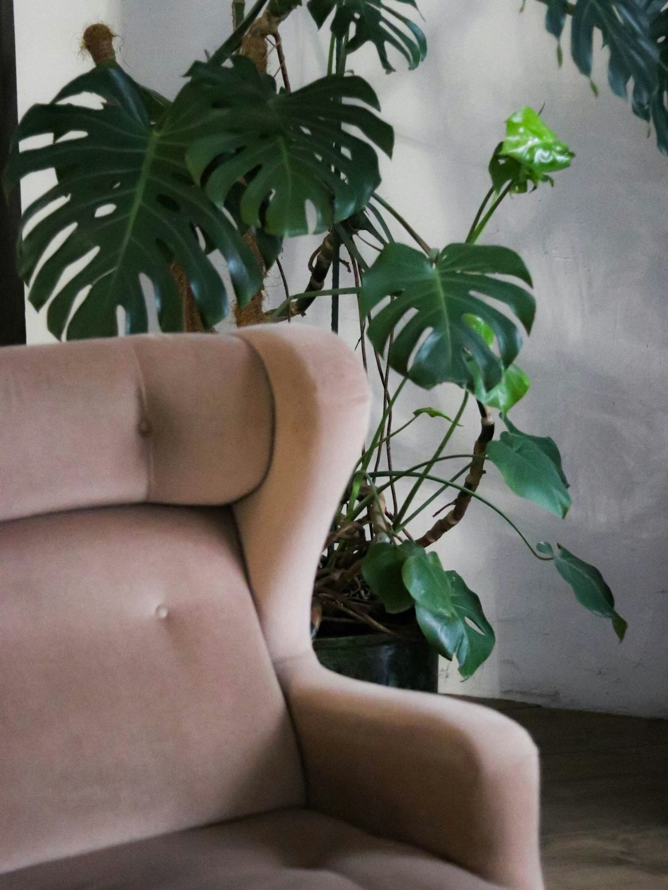
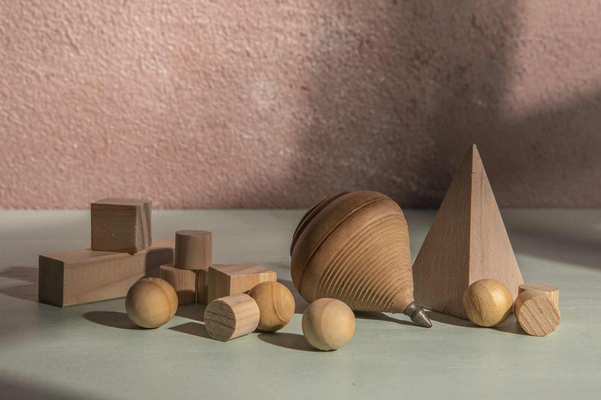

Çocuk, ergen ve yetişkinler için bağlanma odaklı terapi
EMDR, oyun terapisi ve çift terapisiyle Güvenevler Alaçam Sitesi'nde.


Çalışma alanları
Her görüşme gizlilik ve saygı çerçevesinde yürütülür.
Bireysel terapi
Kaygı, depresif duygu durumu, stres ve yaşam geçişleri gibi konular güvenli bir ortamda ele alınır.
Çocuk ve ergen
Davranış, uyum, okul ve duygu düzenleme güçlükleri çocuğun yaşına uygun yöntemlerle değerlendirilir.
Travma ve yas
Zorlayıcı yaşam olayları ve kayıp sonrası süreçler için destekleyici terapi yöntemleri uygulanır.
Çift ve evlilik terapisi
İletişim sorunları, çatışma döngüleri ve güven konuları çiftle birlikte çalışılır.
Aile danışmanlığı
Aile içi iletişim, ebeveynlik ve sınırlar konusunda tüm aileyi kapsayan görüşmeler yapılır.
Psikolojik testler
Gelişim, dikkat ve kişilik değerlendirmeleri için standart test uygulamaları yapılır.

Bir dakikalık nefes molası
Kutu nefesi: 4 saniye nefes alın, 4 saniye tutun, 4 saniye verin, 4 saniye bekleyin. Daireyi takip edin.
Bu egzersiz rahatlamaya yardımcı bir tekniktir, terapinin yerine geçmez.
Terapi süreci
Kendi hızınızda ilerleyen, birlikte planlanan bir süreç.
Ön görüşme
Sizi bu sürece getiren konu ve beklentileriniz hakkında ilk görüşme yapılır.
Değerlendirme
Gerekli durumlarda görüşme ve testlerle ihtiyacınız netleştirilir.
Terapi süreci
Ortak belirlenen hedefler doğrultusunda düzenli seanslar planlanır.
Kapanış ve izlem
Kazanımlar birlikte değerlendirilir, gerekirse izlem görüşmeleri yapılır.
Size uygun bir saat bulalım
Formu doldurun ya da arayın, randevunuzu birlikte planlayalım.